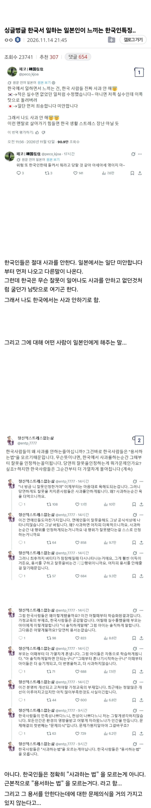

한국서 일하는 일본인이 느끼는 한국인특징
댓글
FACT
반박이 안 되네
ㅇㄱㄹㅇ
분명 어릴 때는 사과하고 용서하는 법을 배웠는데,
사회에 나가면 되도록 사과하지 말라는 말을 듣고, 죄송하단 말은 하지도 말란 놈들이 존나 많음
정서 차원의 문제로 해석하려고 하는데, 난 좀 다르게 봐.
나 초등학생 때까진 사소한 일이면 다 찾아가서 엄밀한 자기 잘못이 아니어도 가서 죄송합니다.하고 풀었음.
학교에서 운동하다가 부딪힌 적이 있었는데, 저녁에 갑자기 퇴근하신 동급생 어머님이 과일을 들고 찾아와서 미안하다고 했음.
"내가 미안하면 상대방도 이해한다."라는 "문제를 마주하지 않고 놔두는 게 더 나쁘다"라는 정서가 아직 있던 시기였지.
근데 지금은?
산업이 전부 첨단이거나 극한의 서비스업이잖아.
대체로 오고 가는 이야기들이 고맥락이고 소통이 빨라서 무슨 상황인지 파악도 제대로 안되는데, 그냥 소속된 단체 대신 일단 미안하다고 깔고 갈 수도 없어. 뭔가가 잘못 되어버리면 책임져야 할 게 많은 데다가 한국에서는 녹음기가 합법이라서 '죄송하다' 한마디면 그 모든 귀책사유가 전부 내 앞으로 와 버림.
나도 저런 정서에 불만이 없던 건 아닌데, 뭐든지 '죄송합니다'로 시작해야 하는 사회도 나름대로 끔찍함.
닭이 먼저냐 계란이 먼저냐의 문제지만, 제대로 사과하는 법을 모르니까 용서하는 법도 모르는거지. 진정성있는 사과는 쿨하게 뒤끝없이 용서하는게 또 우리 정서기도 하니까.
한국사회에서 잘못에 대한 사과는 자기자신을 도마 위에 올리는 거라고 생각함
순수한 의미의 사과도 중요하지만 현실적으로는 피의자가 어느 정도의 정상참작을 바라고 하는게 사과인데 어차피 속죄해야 한다면 사과보다 몰랐다고 둘러대는게 더 유리하니 당연히 그쪽을 고르겠지
ㅇㄱㄹㅇ 법적으로도 그렇고 사회 전반적으로 책임자 찾아서 뒤집어 씌우는데 혈안이 됨
롤에서도 지면 범인찾기하고 안전관리자나 중대재해처벌법처럼 책임자 찾아서 매다는게 우리나라니까
약간 유명인들이나 인플로언서들 한번 약점 잡히면 개처럼 물어뜯는 그런거 말고 일상이나 회사에서는 공감 안가네
서비스업 개진상 비율 높으면 그렇게 느낄만도 하고